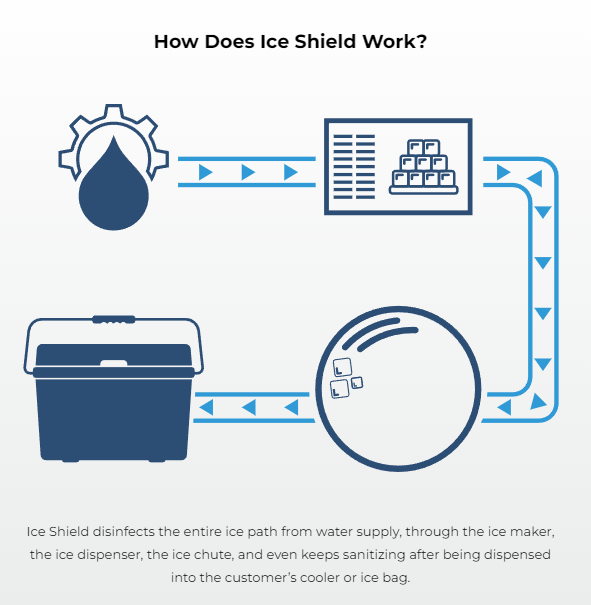
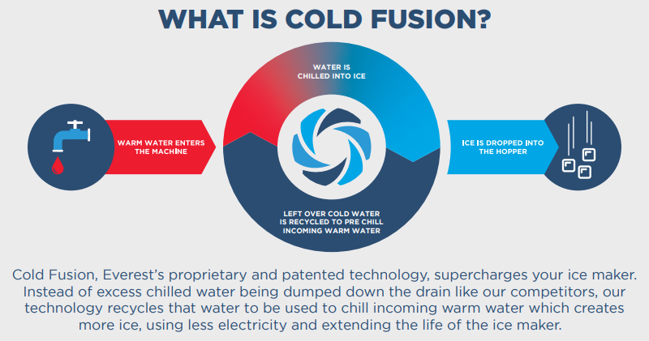
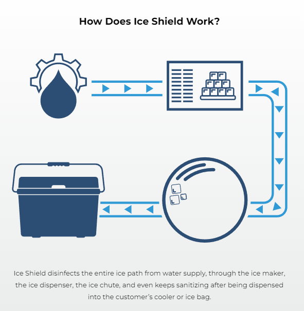
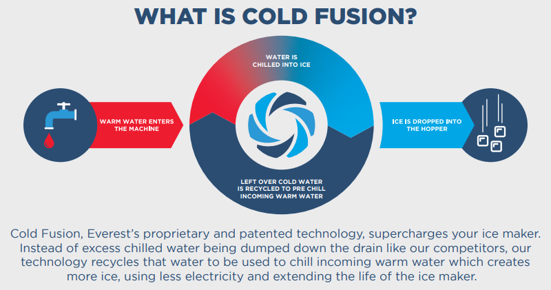

Everest VX4 Ice & Water Vending Machine
Our flagship offering, the Everest VX4, has been engineered to perfection. It offers both purified ice and water vending solutions around the clock. Here's what sets it apart:
- Advanced 5-stage water filtration ensuring purity at its best.
- High capacity drum means you can buy hundreds of 10lbs ice bags per hour.
- UV sterilization to maintain ice and water quality.
- High efficiency, producing 190-800 lbs of ice daily.
- Weatherproof, ensuring durability and operational capability in varying environments. Refill on ice and water in any weather, anytime
 



Why Choose Fulcrm LLC's Vending Solutions?
With our Everest VX4 machines strategically placed for your convenience, here's why Fulcrm LLC remains a cut above the rest:
- 24/7 accessibility, ensuring that you have access to pure ice and water whenever you need it.
- Cost-effective solutions - only $2 for a 10lb bag of premium, micron filtered, UV treated ice.
- Seamless cashless vending experience without the need for store entries, perfect for on-the-go lifestyles.
- Dedicated maintenance teams ensuring our machines provide consistent service round the clock.